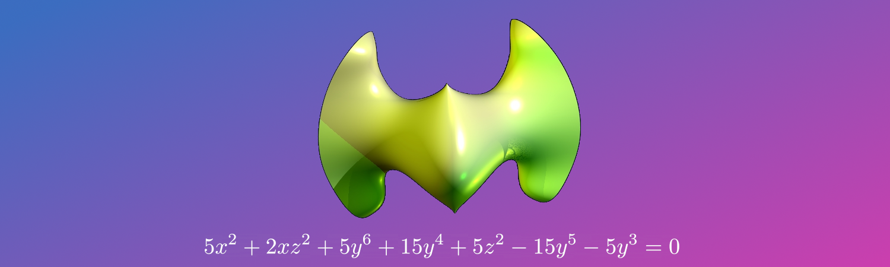

Contributions to the BPAS Library
The basic polynomial algebra subprograms (BPAS) library is a C/C++ library for high-performance computer algebra. It has optimized algorithms for the arithemtic and factorization of univariate and multivariate polynomials as well as the ability to solve nonlinear systems of equations (mutual zeros of a set of multivariate polynomials) using tools from computational algebraic geometry.
The software uses C++ to organize the complex hierarchy of algebraic structures and C for efficient low-level implementation of algorithms. Algorithms from the theory of regular chains are used to compute efficient solutions to nonlinear systems, and the implementation uses parallel computing to optimize running time.
I have made several important contributions to the BPAS library, which include:
- C++ classes for representing solution components (triangular sets and regular chains) and containing the methods for nonlinear system solving
- co-implemented parallel system solving for polynomial systems using divide-and-conquer and producer-consumer parallelism
- C and C++ code for efficient factorization of univariate polynomials (relying partly on NTL)
- C++ classes for computing exact and approximate symbolic integrals of rational functions
The source code is available here or via the github logo above.
The 3D rendering of the "Eve" algebraic surface appearing on the on the main page of this site was obtained from homepage.univie.ac.at. Based on this image I used gimp to construct the image above, which includes the trivariate polynomial that describes "Eve" (technically Eve is the real algebraic surface corresponding to the real zeros of the polynomial above; an example of how this real-zero-set can be computed is available here).
{kind=link}